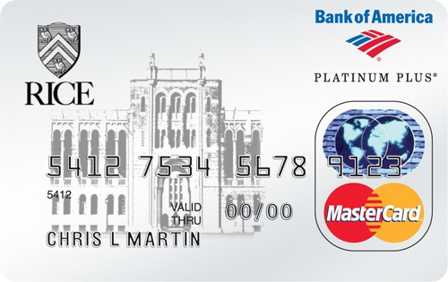

- The Rice University Platinum MasterCard is the only card that supports Rice. With every purchase on the card, Bank of America sends a contribution to Rice University. Show your pride!
- The most rewarding choices —Redeem WorldPoints® rewards for travel, brand-name merchandise, gift certificates from top retailers, or unlimited cash rewards. Redemption levels start as low as 2,500 points. Earn one point for every dollar in net retail purchases. Use your card for everyday purchases, recurring bills, or major expenses, and watch your WorldPoints rewards points grow even faster!
- Online account access —get up-to-the-minute account information, schedule online payments, review recent statements and much more on www.bankofamerica.com
- Apply by clicking here or calling 800-932-2775.
- The Rice University MasterCard is provided through an agreement between Rice University and Bank of America. To receive a copy of this agreement at no charge, contact the Office of Alumni Affairs at 713-348-4057.